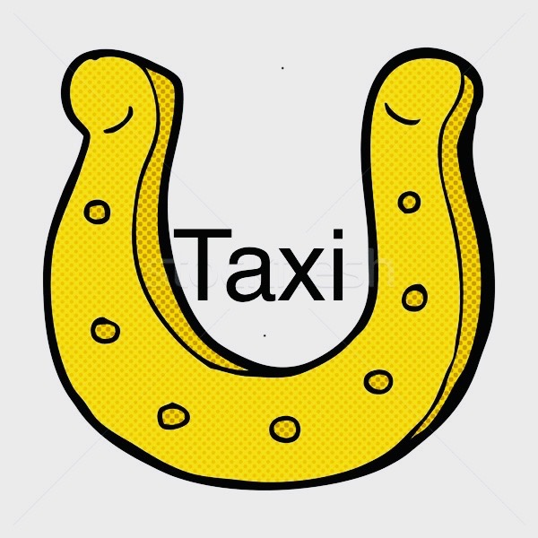

Balatonboglár
Személyszállítás Balatonbogláron és vonzáskörzetében, kompromisszumok nélkül.
Kényelmes, tágas egyterű autómmal vállalom kisebb csoportok, családok szállítását.
Nem probléma, ha nincs nálad készpénz! Autómban kényelmesen fizethetsz bankkártyával is.
Kényelmes és pontos kijutás a reptérre. Nagyobb társaságoknak 8+1 fős kisbuszt is biztosítok!
Német nyelvű utasaimat is zökkenőmentesen, az anyanyelvükön szolgálom ki. Ich spreche Deutsch!
Nem csak helyben! Vállalom belföldi és külföldi távolsági utazások lebonyolítását is, előzetes egyeztetéssel.
Utasaim elégedettsége a legfontosabb. Büszke vagyok az 5 csillagos Google értékelésemre!
"Tökéletes választás, kedves, gyorsan reagáló sofőr. Csak ajánlani tudom, már évek óta őt hívjuk."
"Nagyon korrekt, kedves, humoros. Csak ajánlani tudom mindenkinek."
"Kedves sofőr, gyors és precíz munkavégzés, jó hangulat, csak ajánlani tudom mindenki számára."
"Balaton déli partján a legszuperebb taxis, kedves, gyors, korrekt áron dolgozik. Csak ajánlani tudom!!"